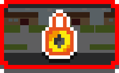

#RoadToBeta2
It's summer, time to relax, to go to the beach, sunbathes... Nope! Here at Santa Clara Games we are on fire improving and developing HassleHeart's Beta2!
Thanks to all the feedback we received from you after Beta1 release, we have powered up our batteries and are working hard to bring you the next release this september.
We have to thank you all our players (and fans!) for their comments and support. Thank you again guys, you are awesome!
Stay tunned for more news to come!
